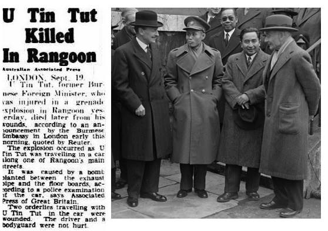

Explore Through Key Periods
BRITISH BURMA
(1826-1942)
View more
YANGON,GLOBAL CITY
(1853-1962)
View more
THE 1950s AT HOME
AND ABROAD
View more
Today's Hightlighted Post
1895 - 1947
Most Important Figures In Modern Burmeses History
U Tin Tut, one of the most important figures in modern Burmese history, was born on 1 February 1895. He was educated at Dulwich and Queen’s College Cambridge. A star rugby player (he captained his college team), he was after Cambridge called to the English bar and became as well a King’s Commissioned officer in the (British) Indian army. He was also the very first Burmese..
Explore Myanmar History through a Timeline
The aim of this website is to promote interest in Myanmar's amazing history.Our hope is to challenge the often two-dimensional and uncritical views of history taught in Myanmar by reexamining key periods in the country's past. We would like as well to reveal the rich multicultural nature of Myanmar's history and its deep and ongoing ties to global events and trends.Finally, this website will also delve into the history of neighbouring regions, such as Yunnan in China and the Northeast in India, in the hope of introducing these places to a Myanmar audience.We believe that meeting Myanmar's many challenges today will require fresh imaginative thinking. This is turn will only be possible with a clear and critical understanding of Myanmar and global history.